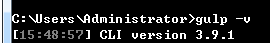

梳理知识点
nodejs 概念 ： 是一个js的运行环境
nodejs的语法规范 ：commonJs
定义一个模块，使用 module.exports = {} exports.属性/方法 引入 require引入
模块种类 ：核心模块 第三方模块 先下载 自定义模块
npm node的包管理工具 npm是一个命令 下载 或卸载包文件
使用nodejs搭建服务器
http.createServer().listen()
路由概念 ： 不同 路径、参数
gulp的安装步骤 window下哪个命令能够进入命令行窗口 ：cmd
1、先安装nodejs
2、全局安装gulp 打开cmd命令行窗口安装
命令 ： npm install -g gulp@3.9.1 gulp的全局安装
检查gulp是否安装成功 ： gulp -v

3、局部安装 在项目目录中安装gulp
在该项目目录下进行局部安装gulp 命令是 ：
进入到项目目录下 ：
npm install --save-dev gulp@3.9.1 局部安装gulp的命令
安装成功后 通过 gulp -v 确定安装是否成功
E:\jd>gulp -v
[18:06:38] CLI version 3.9.1
[18:06:38] Local version 3.9.1

-----------------------------------------------
接下来的操作都在项目目录下完成
4、配置package.json文件
命令 ： npm init -y / npm init
5、安装gulp插件
命令： npm install --save-dev 插件名称
例如 ：
npm install --save-dev gulp-cssmin
npm install --save-dev gulp-uglify
gulp-sass 将sass文件转成css文件(有可能安不上 选择性安装)
gulp-cssmin 压缩css文件
gulp-uglify 压缩js文件
gulp-concat 合并文件
gulp-rename 重命名
gulp-imagemin 压缩图片文件（不稳定）
使用npm命令移出所依赖的模块 ： npm uninstall package名称 –save
gulp ：
gulp是前端自动化工具 打包项目 (压缩各种文件)
1、安装
先安装node.js
通过 node -v 查看node安装版本
安装gulp：
1、先全局安装 ： npm install gulp -g
2、创建gulp目录项目 ， 通过 cd 目录名 进入到该目录
3、在gulp 项目目录下局部安装gulp ： npm install gulp --save-dev
4、配置package.json文件 ： npm init -y（插件安装）
2、什么是gulp？
gulp --- 前端自动化工具
作用（插件功能）：
自动压缩js文件、css文件
自动压缩图片文件
自动合并文件
......
3、gulp中的方法
task() 布置任务
三个参数：
第一个参数： 任务名称 默认任务 default
第二个参数： 该任务依赖的其它任务 是一个数组 （可选）
第三个参数： 任务回调函数 （任务执行）
执行其它任务的方式有两种：
第一种：通过default任务依赖执行
第二种： gulp 任务名称
src() 源文件路径 （参数可以是一个数组）
在gulp中，查找源文件时，如果要排除掉某个文件 使用 !
gulp.src( [
'.tmp/**/*',
'!.tmp/static/scss',
'!.tmp/**/*.scss'
] );
dest() 目标文件路径 dest参数中的文件夹名称可以自动创建
pipe() 管道方法 表示输送 也就是 “下一步”
watch() 监听
两个参数：
第一个参数： 监听文件的路径
第二个参数： 监听的任务名称 数组
4、gulp 插件
gulp-sass 将sass文件转成css文件(有可能安不上 选择安装)
gulp-cssmin 压缩css文件
gulp-uglify 压缩js文件
gulp-concat 合并文件
gulp-rename 重命名
gulp-imagemin 压缩图片文件（不稳定）
.....
插件安装： npm install --save-dev 插件名称
sass语法
sass功能 ：
它使用自己的语法并编译为可读的CSS
可以在更少的时间内轻松地编写CSS代码
是一个开源的预处理器，被解释为CSS
可以兼容所有的CSS版本
sass 动态的css
写一些语法规范 变量 嵌套 类的重用....
考拉使用 ：
拖拽css目录
设置输出路径 scss文件要输出的css文件
识别中文 ： @charset "utf-8";
sass语法
1、注释 ： // 不能被css识别 /**/ 可以被css识别
sass中有哪些注释类型 ： //注释 /*注释*/
2、变量定义 ： $变量
3、嵌套 ：
传统css:
.nav {
...
}
.nav ul{
...
}
.nav ul li{
...
}
嵌套方式：
.nav{
width:960px;
height : 40px;
ul{
margin-left : 20px;
li{
float: left;
}
}
}
符合属性嵌套：
border:{
color: red;
style:solid;
width:1px;
}
&表示继承父级标签
a{
&:hover{ color:red }
}
在sass的嵌套的过程中，如果需要用到父元素，在 SASS 中通过（& ）符号引用父属性
4、代码重用、混合(函数)： sass如何实现代码重用 ，有几种方式 ~~~
width:960px;
margin:0 auto;
第一种方案 ： 类的继承 使用.定义一个类 然后通过 @extend 调用这个类（缺点：不能定义参数）
.public{ //无参数 使用 @extend .public;
width:960px;
}
总结：sass中定义一个类，要继承这个类，需要使用的关键字是 （@extend）
第二种方案 ： 使用 @mixin 定义一个代码块 使用 @include 调用这个代码块 （先定义 后调用） 该方式可以定义参数
该方式用于定义可重复使用的样式，避免了使用无语意的class
如果参数有默认值 该参数放到后面
@mixin public{ //可以定义参数 使用 : @include 导入 先定义 后调用 （混合定义）
....
}
@mixin public($height:200px){//定义一个默认值
width: 960px;
height: $height;
margin: 0 auto;
}
#header{
@include public(400px);给具体的参数值 默认值无效，如果不传递参数 就按照默认值执行
}
总结：sass中使用@mixin定义了一段代码块，需要使用的关键字是 ： （ @include）
sass中混合(代码重用)和函数的不同点：
函数有返回值 sass混合没有
混合的结果是一段代码
5、导入： @import "xxx.scss" 将多个scss文件合并成一个css文件
sass中用于导入一个新文件的关键字是 ：@import
6、if语句 :
$type : monster;
$flag : false;
@if $type==monster {
display :inline ;
}
@if $flag {
p {color :red; }
} @else{
p {color :blue; }
}
例如 ：
这个代码正确输出是
p {
@if 1 + 1 == 2 { border: 1px solid; }
@if 5 < 3 { border: 2px dotted; }
@if 5 >6 { border: 4px dotted; }
@if null { border: 3px double; }
}
7、for 语句：
@for $i from 1 through 3 {
.item-#{$i } { width: 2em * $i ; } // .item1 .item2 .item3
}
循环语句两种写法：
@for $i from 1 to 4 { 语句;}
@for $i from 1 through 4{ 语句;}